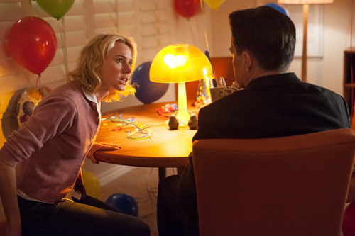
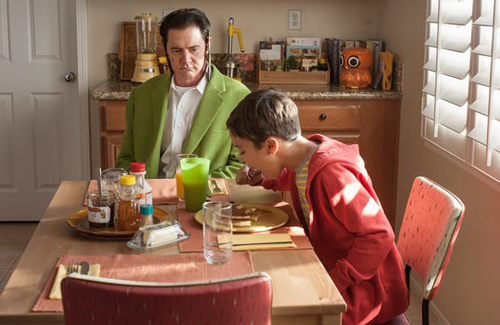
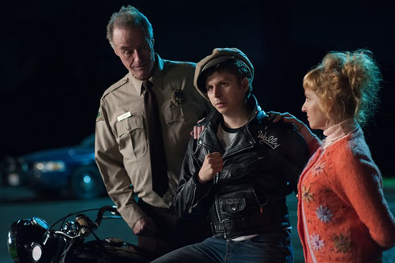
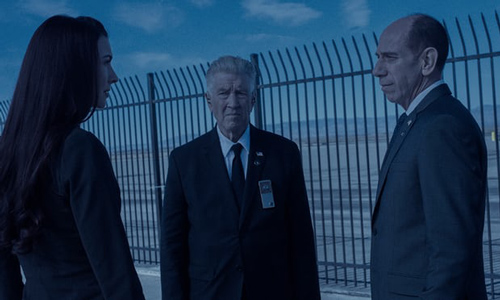

Agent Cooper, who came through the socket of a Vegas bedroom thereby becoming local lunkhead Dougie, is being chauffeured home from the casino in a limo. They drop him off at Dougie's home in the suburbs. His wife Janey-E is waiting.
Naomi Watts was captivatingly crackers as Princess Di, but here she's even more diverting as Janey-E, a woman who doesn't seem to notice that her husband has been replaced by someone else. Or, if she notices, doesn't care that much.
"I'm so glad you're home, Dougie," she says. But Dougie isn't home: he disappeared in a puff of smoke and has been replaced by the newly embodied soul of a missing FBI agent. The guy passing himself off as her spouse is 23kg (50lb) lighter, wearing a sharp suit and, crucially, carrying a sack containing thousands of dollars.

The absurd comedy of this scene depends on Lynch's satire of suburbia: if hubby comes home with wads of cash, who cares if he's not the same guy who left? Not Janey-E. When Dougie/Cooper comes down for breakfast with a necktie knotted around his head, she isn't bothered. Nor is she fazed when he wets himself. "Listen, Mr Dream Weaver," Watts says to MacLachlan as if to a toddler, ushering him into the bathroom, "you go potty and let's get you dressed fast."
Watts may be living with an incontinent alien but, quite possibly, is prepared to live in denial thanks to all the dough he's brought home. Such is conjugal felicity, Vegas-style.
Much of this episode exchanges the dark psychodrama of episode three for Lynchian absurdist humour, some of it misfiring. For instance, in one scene at Twin Peaks police station, batty receptionist Lucy and her daffy spouse Andy tell Sheriff Truman their son Wally Brando is waiting to talk to him. Outside, sitting on his motorbike is their son played by Michael Cera, dressed in Marlon Brando's leather jacket and cap from The Wild One.
"It's good to see you, Sheriff Truman," says Cera's Brando, who explains that he generally spends his life following his dharma on the road. But not today. "As you know, your brother Harry S Truman was my godfather. I heard he's ill. I came to pay my respects." Hats off to Cera for so successfully impersonating Brando's voice and for making the scripted reference to The Godfather work, though the point of this scene is anybody's guess.

Let's not forget that this new season started off with the mysterious murder of librarian Ruth Davenport in Buckhorn, South Dakota. Her decapitated head was found in bed above the body of an unidentified man. In this episode, local cops now check the prints on the body against their DNA database and find a match. But access is denied to them because military authorisation is required. This indicates, surely, that the guy they have in custody, local school principal William Hastings, is not the murderer. Hold on, though: didn't the cops find Hastings' dabs all over the murder scene last week? Confusing.
Just then, the FBI delegation headed by Cole arrives in Buckhorn to interview the guy who looks like Agent Cooper whom police found at the wheel of his crashed car. Bad Cooper tells Cole he has been working undercover all these years, primarily with a colleague called Phillip Jeffries; the same Jeffries, presumably, as the billionaire who hired student Tom to keep an eye on that mysterious glass box.
Cooper tells Cole he was on his way to present the findings of his undercover work to the FBI in Philadelphia when he crashed. But that can't be true: as Tammy points out, he was headed in the opposite direction. Even more discombobulatingly, the voice coming out of Cooper's mouth belongs to someone else.
Later, we learn from Albert that Jeffries was a former FBI agent and that Albert had given him some information to help Cooper. The information was the name of the FBI's agent in Colombia and a week after divulging the agent's name, he was dead.

"I hate to admit this, but I don't understand the situation at all," Cole tells Albert after the interview. Albeit unwittingly, Lynch delivers the funniest line of the show: if you don't know what's going on, what hope is there for the rest of us?
"Do you understand this situation, Albert?" Cole asks his colleague. Albert looks across the parking lot and finally says: "Blue rose." I'm not sure what that means, but it's what the mysterious face in the sky said in episode three. "It didn't get any bluer," replies Cole. Which doesn't make a lick of sense.
Still, I'm kind of entranced, enjoying being confused. I'm experiencing, thanks to Lynch, what Keats called negative capability, that state of being in "uncertainties, mysteries, doubts, without any irritable reaching after fact and reason". That said, I'd quite like to know what blue rose means and who killed Ruth Davenport. I'll be back next week to find out if Twin Peaks starts making sense. The safe money says it won't.